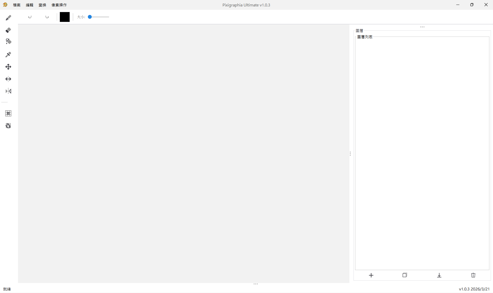
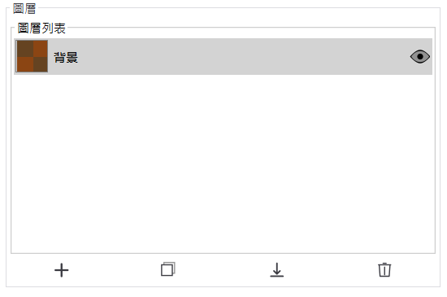
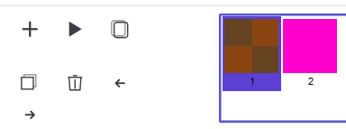
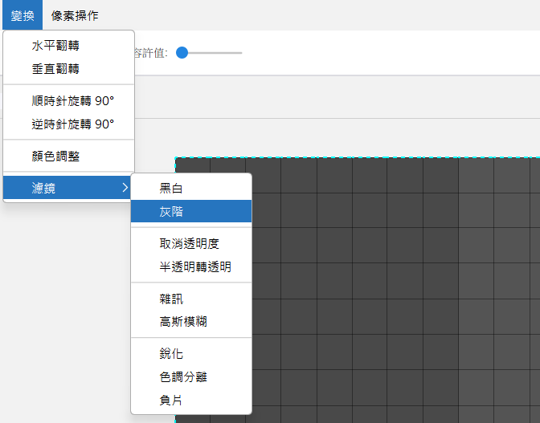

專為 Minecraft 材質包創作者打造的專業像素藝術編輯器。 圖層系統、動畫工具、進階濾鏡，以及 AES-256 加密的專案格式── 一切你所需的，盡在一款強大的應用程式中。
從基礎繪圖到進階隱寫術，Pixigraphia 提供全面工具組， 專為像素藝術及 Minecraft 材質創作而設計。
精準畫筆、橡皮擦、帶容差的油漆桶、自動切換的滴管工具，以及可調筆刷大小，讓每個像素都恰如其分。
完整多圖層支援，包含新增、複製、向下合併、顯示切換、幽靈（透明參考）圖層及自訂命名，讓工作流程井然有序。
內建動畫時間軸，支援幀管理、洋蔥皮預覽、可調 FPS 播放，以及水平可捲動的幀列表。
黑白、灰階、高斯模糊、銳化、噪點、色調分離、負片等，全部支援懸停預覽後再套用。
獨立微調 RGB 通道、亮度、對比度及透明度。即時預覽，隨時套用或重設。
水平與垂直軸對稱繪圖，實時顯示鏡像筆刷預覽並可調整透明度。
帶容差的魔術棒選取、矩形選取、全選/取消/反選，支援加選、減選與交集等組合模式。
專屬格式，完整保存圖層、選取範圍與動畫幀，並以 AES-256 加密及 XOR 混淆保護。
透過 MCAssets 自動下載直接載入 Minecraft 材質，快速調整至標準尺寸：16×16、32×32、64×64。
支援繁體中文、英語、希臘語等，還有文言文、LEET 語、邏輯語及倒反英語等獨特語言模式。
利用 LSB 編碼將秘密文字訊息隱藏於圖像像素中，並可選擇 RGBA 通道進行訊息解碼。
進階像素操作，包含深度編輯模式及可調強度（1–10）的通道選擇性隨機噪點變換。
簡潔、專業的介面，以效率為設計核心。每項工具都在你需要的地方。

整潔的工作空間，配備工具面板、色彩選擇器及畫布──一切皆為最高生產力而設計。支援深色與淺色主題。

透過多圖層支援、幽靈參考圖層及一鍵顯示切換，輕鬆管理複雜的像素藝術專案。

使用內建時間軸編輯器創作精靈動畫。支援洋蔥皮疊加、幀複製，以及可調 FPS 的即時播放。

懸停任意濾鏡即可即時預覽，再決定是否套用。可微調模糊半徑、噪點強度及色調分離等參數。
Pixigraphia 底層採用經過驗證的軟體設計模式，兼顧可靠性與可擴展性。
穩健的撤銷/重做系統，最多支援 50 步歷史記錄。每個操作皆可還原。
模組化工具系統──以熱插拔策略在畫筆、橡皮擦、油漆桶等工具間自由切換。
動態 UI 生成系統，從宣告式規格建立對話框、面板與控制項。
響應式狀態管理，當畫布或工具狀態變更時即時通知所有元件。
Pixigraphia 專為 Minecraft 材質包開發而生。透過 MCAssets 直接載入既有材質、 快速調整至標準尺寸，並匯出像素完美的成果，立即用於你的資源包。
標準版滿足大多數創作者的需求；Ultimate 版為進階用戶解鎖更強大的像素操作功能。
創作精彩像素藝術與 Minecraft 材質所需的一切。
完全免費，全力以赴
下載標準版包含標準版所有功能，加上進階像素操作，專為高端用戶設計。
全功能解鎖
| 功能 | 標準版 | Ultimate 版 |
|---|